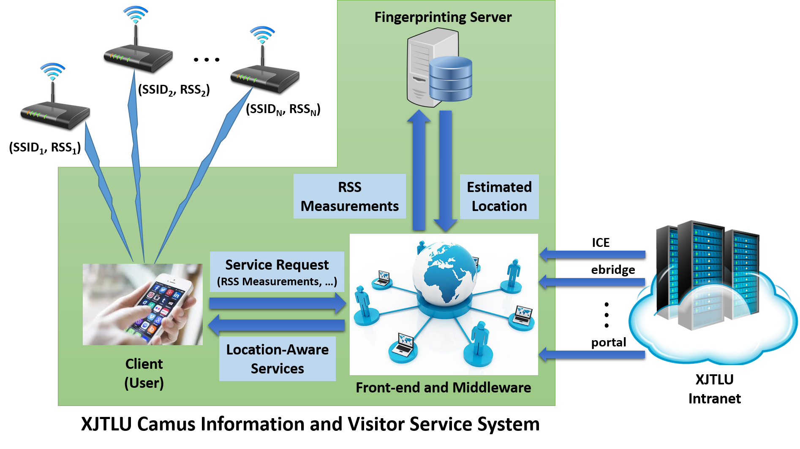

Feasibility Assessment and Roadmap for XJTLU Campus Information and Visitor Service System as A Test Bed for Large-Scale Location-Aware Services in SIP
People
Faculty
- Dr Kyeong Soo (Joseph) Kim, Department of Electrical and Electronic Engineering, XJTLU
- Dr Sanghyuk Lee, Department of Electrical and Electronic Engineering, XJTLU
- Dr Kaizhu Huang, Department of Electrical and Electronic Engineering, XJTLU
- Prof Eng Gee Lim, Department of Electrical and Electronic Engineering, XJTLU
- Dr Joon Sik Kim, Department of Urban Planning and Design, XJTLU
- Dr Yiwen Wang, Department of Urban Planning and Design, XJTLU
- Dr Paul Craig, Department of Computer Science and Software Engineering, XJTLU
- Prof Thomas Chen, Department of Electrical & Electronic Engineering, City University of London
Grants
- Xi'an Jiaotong-Liverpool University Research Institute for Smart and Green Cities (RISGC) Seed Grant Programme 2016-2017 (under Grant RISGC-2017-4)
Overview
Location awareness is one of enabling technologies for future smart and green cities; understanding where people spend their times and how they interact with environments is critical to realising this vision. The partners in this project, who have expertise in diverse areas, will carry out a feasibility assessment and road mapping for XJTLU Campus Information and Visitor Service System with the aim of identifying key component technologies and preparing plans for its implementation as a test bed for large-scale location-aware services in SIP & its use cases for behavioural study of students and visitors on the campus. At the core of the system is indoor localisation based on wireless fingerprinting, which utilises received signal strengths (RSSs) from wireless network infrastructure to estimate a user location; based on this localisation, the system can provide location-aware services by integrating existing data/services available on XJTLU Intranet and tailoring them for the location.

Figure 1: XJTLU campus information and visitors service system.
Meetings
- 22/06/2017 (Presentation from Paul Craig)
- 12/05/2017 (Kick-off meeting)
Related Projects
- XJTLU RISGC-2017-1: Occupancy-driven intelligent control of HVAC system for saving energy and enhancing thermal comfort
- XJTLU RISGC-2017-5: Smart Survey Tool: A Direct Manipulation Interface for Visitor Tracking and Visitor Data Visualisation for Museum and Gallery Exhibitions
- XJTLU SURF-201723: Effective Information Visualization of Museum Visitor Behaviour and Movement Data with Edge Bundling and Curved Lines
- XJTLU SURF-201739: Indoor Localisation Based on Wi-Fi Fingerprinting with Fuzzy Sets